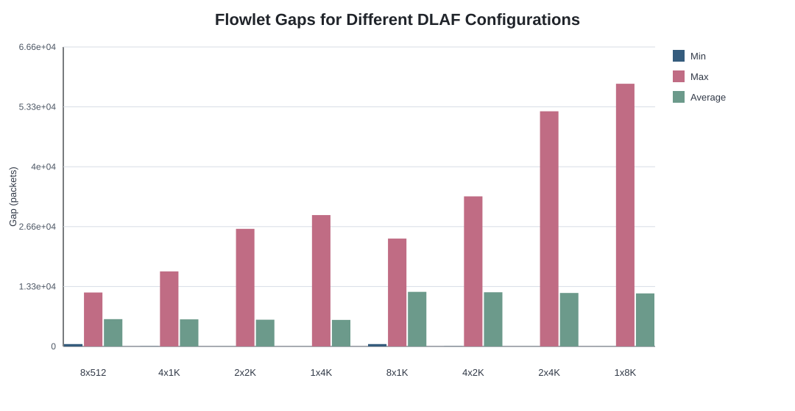
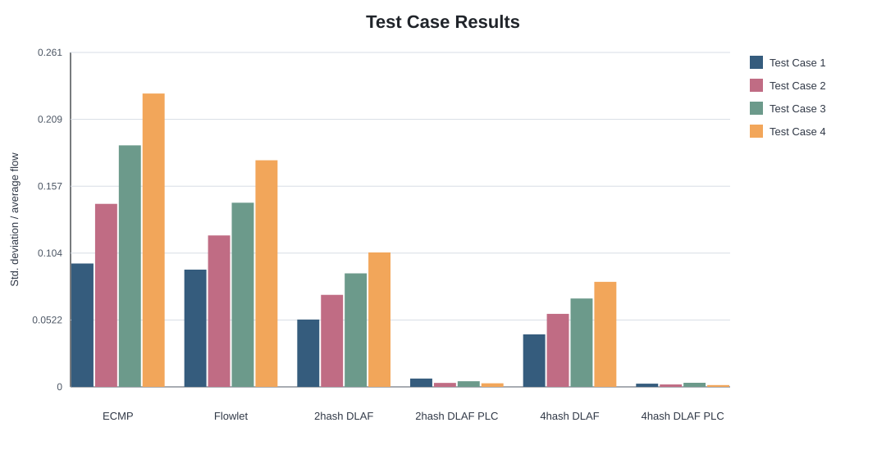
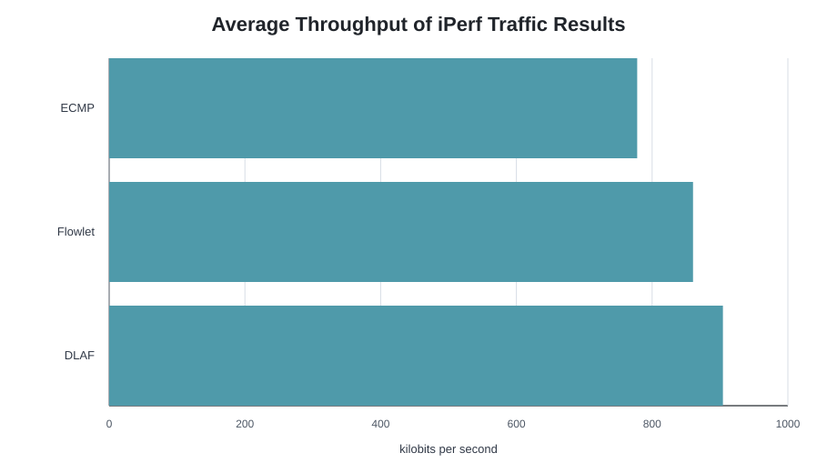

These outputs reproduce the numeric results published in the IPCCC 2023 DLAF paper where the data is available in text. The private production trace and exact Fig. 4 plotting data are not present in the public repository.
| Scheme | Cfg. | SDV | flowlets | MinGap | MaxGap | AvgGap |
|---|---|---|---|---|---|---|
| ECMP | - | 729K | - | - | - | - |
| Flowlet | 50us | 14.4K | 88.9M | 50us | 79.9ms | 2.8ms |
| Flowlet | 100us | 9.4K | 84.0M | 100us | 79.9ms | 2.9ms |
| Flowlet | 500us | 23.8K | 68.2M | 500us | 79.9ms | 3.5ms |
| Flowlet | 1ms | 13.9K | 54.7M | 1ms | 79.9ms | 4.2ms |
| Flowlet | 5ms | 109K | 15.1M | 5ms | 79.9ms | 8.7ms |
| Flowlet | 10ms | 150K | 3.7M | 10ms | 79.9ms | 14.3ms |
| Flowlet | 50ms | 343K | 2401 | 50ms | 79.9ms | 55.8ms |
| Flowlet | 100ms | 861K | 0 | - | - | - |
| DLAF | 8*512 | 5 | 64.9M | 146us | 24.2ms | 3.4ms |
| DLAF | 4*1K | 10 | 65.3M | 13us | 29.6ms | 3.3ms |
| DLAF | 2*2K | 10 | 66.0M | 0 | 62.1ms | 3.2ms |
| DLAF | 1*4K | 6 | 68.0M | 0 | 189.9ms | 3.1ms |
| Scheme | Cfg. | SDV | flowlets | MinGap | MaxGap | AvgGap |
|---|---|---|---|---|---|---|
| ECMP | - | 630K | - | - | - | - |
| Flowlet | 50 | 3.6K | 41.4M | 50 | 6934 | 4941 |
| Flowlet | 100 | 4.0K | 40.8M | 100 | 6934 | 5007 |
| Flowlet | 500 | 2.1K | 36.3M | 500 | 6934 | 5592 |
| Flowlet | 1000 | 12K | 33.6M | 1000 | 6934 | 5985 |
| Flowlet | 5000 | 585K | 31.3M | 5000 | 6934 | 6294 |
| Flowlet | 10000 | 680K | 0 | - | - | - |
| DLAF | 8*512 | 0 | 32.6M | 524 | 11989 | 6066 |
| DLAF | 4*1K | 0 | 32.9M | 24 | 16684 | 6021 |
| DLAF | 2*2K | 0 | 33.4M | 2 | 26143 | 5942 |
| DLAF | 1*4K | 0 | 33.7M | 1 | 29204 | 5894 |


